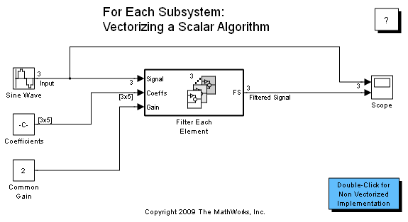

For Each Subsystem によるスカラー アルゴリズムのベクトル化
このデモの目的は、For Each Subsystem の使用方法を紹介することです。このデモでは、簡単にするために、ベクトルで演算を行います。
デモ モデル sldemo_foreach_vectorized を開いてください。このモデルには、入力信号を 1 つずつ処理する For Each Subsystem が含まれています。
For Each Subsystem への入力は、処理する信号、これらの各信号で使用する FIR フィルターの係数、および共通ゲインです。
各信号はスカラーであり、個別に処理する必要があります。このため、分割幅 1 をスライスすることによって、分割の次元を制御する For Each ブロックが入力信号を次元 1 に沿って分割するように設定されます。また、入力信号ごとに、同じ基準を使用して、対応する係数のセットを分割する必要もあります。ゲインはすべての信号に共通なので、この入力は分割されません。
出力信号の次元は入力信号の次元と一致しているはずなので、連結の次元は分割の次元に等しくなるように設定されます。信号の次元を変更 (この場合は転置) したい場合は、連結の次元として 2 を選択できます。
For Each Subsystem の場合、分割の次元と幅を設定する必要がありますが、入力信号のサイズは設定する必要はありません。その後、このサイズが分割幅の倍数であることを確認するチェックが行われます。エラーが検出されなければ、Subsystem は、囲まれた Subsystem が実行する独立実行の数を計算します。特定の含まれたブロックに関連している状態にはそれぞれの実行における一意の値があるという点で独立しています。
このモデルのベクトル化されていない実装を確認するには、このモデルの左隅にある Subsystem をダブルクリックします。この実装では、For Each Subsystem は使用されません。この実装では、Subsystem を必要な回数だけ複製し、信号を適切に選択して連結することによって、For Each Subsystem の機能を模倣しています。この複製プロセスはエラーを起こしやすい上、スケーラブルではありません。入力信号のサイズを変更する際は、それに応じてモデルを変更する必要があります。
